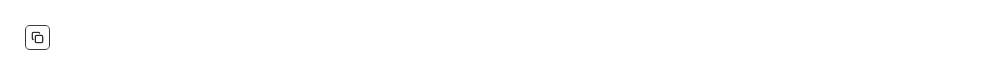

A one-click copy control: a square icon button that writes a string to the clipboard, swaps its clipboard icon for a tick, announces "Copied" to a screen reader, and resets itself a couple of seconds later. Reach for it wherever a value on the page is there to be taken somewhere else: an install or CLI command in docs, a curl or SDK example, an API key, token or client secret in a settings screen, a share or invite link, a webhook or callback URL, a connection string, a git SHA or branch name, a wallet or contract address, an invoice, order, ticket, trace or request ID, a coupon or referral code, a two-factor recovery code, an error message or stack trace a user is about to paste into a bug report, a generated password, a colour hex in a palette, and the value cell of any table or key/value list. Common asks it answers: "copy button", "copy to clipboard button react", "copy icon button", "clipboard button shadcn", "shadcn copy to clipboard", "copy button with copied state", "copy with tooltip feedback", "copy code button", "copy API key button", "copy link button", "useCopyToClipboard alternative", "react-copy-to-clipboard alternative", "copy button accessible". shadcn/ui has nothing that touches the clipboard — not in button, not in input-group, not anywhere in its sixty-odd components — so this is the piece everyone rebuilds inline, and the inline version is where the bugs live. Distinct from pulld copy-field, which is the read-only input with the value shown beside the button, and from pulld code-block, which is the scrollable panel that reveals one on hover; both compose this button rather than repeating it. What the four-line inline version gets wrong, in order: it forgets `type="button"`, so pressing it inside a form submits the form; it swaps the icon and nothing else, so a screen reader user gets no feedback at all, since a changed icon is not an event; it leaves the timeout running, so a button unmounted mid-countdown sets state on a dead component; and it treats the write as if it always succeeds. Here the button is `type="button"`, the copied state is announced through an sr-only `aria-live="polite"` region rather than through the icon, both icons are aria-hidden so nothing reads "check" out loud, and the reset timer is cleared on unmount and whenever `timeout` changes. `navigator.clipboard.writeText` rejects on an insecure origin, inside a sandboxed iframe, or when the document is not focused; a rejected write leaves the button resting instead of flashing a success it did not get, so nothing lies to the user — wrap it if you also want an error toast. The API is two props on top of a real button: `value` is the string to copy and `timeout` (default 2000ms) is how long the tick stays. Everything else is a normal button — `disabled`, `title`, `id`, `data-*` and event handlers all pass through, and your own `aria-label` replaces the built-in "Copy to clipboard" / "Copied" pair when you want to name what is being copied ("Copy API key"), with the live region still announcing the result. Styled with shadcn tokens (input, accent, ring, muted-foreground) so it follows light and dark mode, `className` merges rather than fights, and the focus ring is `focus-visible` so pointer users never see it. One file, two lucide icons, no clipboard library.

Rendered on the shadcn default neutral palette with harness-generated props.
pnpm dlx shadcn@4.21.0 add @pulld/copy-button
| licence | POINTER |
|---|---|
| primitive base | none |
| type | registry:ui |
| files | src/components/ui/copy-button.tsx |
| npm deps pulled | none beyond the pre-installed peer set |
| registry deps | — |
| semantic / palette / hex | 5 / 0 / 0 |
| writes shared ui/ | yes — can overwrite the project’s own primitives |